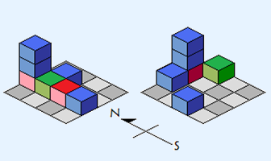
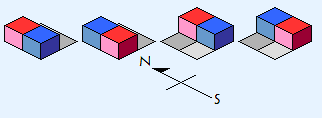

BZPRO
#4313. 三维积木
内存限制：512 MiB
时间限制：10 Sec
提交
提交记录
讨论
题目描述
小C小时候喜欢玩积木。由于小C并不喜欢一般的题目中那些称之为积木的二维物体，他玩的积木都是三维的。
小C的积木都是一些个1*1*1的小方块，每个方块都有一种颜色，红色，绿色或蓝色。小C玩积木的场所是一个N*N的网格，玩积木时，他会将积木整齐地摞在网格上。
为了优美，小C每次摞出来的积木堆从正前方看过去时都只能看到一个颜色的积木。

如图，左图是优美的，右图不优美。
现在小C大了，对玩积木没有了什么兴趣，他感兴趣的是他到底能玩出多少种不同优美的的积木组合。需要注意的是，颜色相同的积木被视为是完全相同的。输出方案数mod (10 ^ 9 + 7)。
输入格式
仅一行，四个非负整数，R,G,B,N，分别表示红色积木数，绿色积木数，蓝色积木数和场地大小。
输出格式
仅一个数，即答案。
样例
样例输入
1 0 1 2
样例输出
4
数据范围与提示

100% ： R,G,B,N <= 25